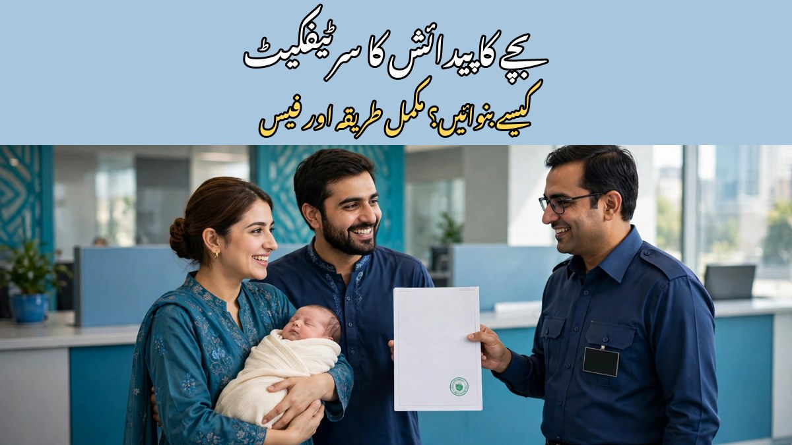

بچے کا پیدائش کا سرٹیفکیٹ کیسے بنوائیں؟ مکمل طریقہ اور فیس

بچے کی پیدائش کے بعد سب سے پہلا سرکاری کام اس کی پیدائش کا سرٹیفکیٹ بنوانا ہے — یہ بچے کی شناخت کی پہلی سرکاری دستاویز ہے۔ اس کے بغیر B-Form نہیں بنتا، اسکول میں داخلہ مشکل ہو جاتا ہے اور پاسپورٹ و شناختی کارڈ کے مرحلے پر بھی رکاوٹ آتی ہے۔ خوش قسمتی سے طریقہ بہت آسان ہے: پیدائش کی رجسٹریشن اپنی یونین کونسل میں کروانی ہوتی ہے اور چند دنوں میں سرٹیفکیٹ مل جاتا ہے۔ اس مضمون میں مکمل طریقہ، درکار دستاویزات، فیس اور تاخیر کی صورت میں حل بیان کیا گیا ہے۔
1۔ پیدائش کا سرٹیفکیٹ کیوں ضروری ہے؟
پیدائش کا سرٹیفکیٹ بچے کی تاریخِ پیدائش، جائے پیدائش اور والدین کے نام کا سرکاری ثبوت ہوتا ہے۔ نادرا کا B-Form اسی کی بنیاد پر بنتا ہے، اسکول میں داخلے کے وقت عمر کی تصدیق اسی سے ہوتی ہے، اور پاسپورٹ و شناختی کارڈ کے لیے بھی یہی بنیادی ریکارڈ ہوتا ہے۔ وراثت، بیرونِ ملک سفر اور سرکاری اسکیموں میں بھی یہی دستاویز مانگی جاتی ہے۔ اگر پیدائش کے وقت رجسٹریشن نہ کروائی جائے تو بعد میں عمر ثابت کرنا مشکل ہو جاتا ہے، اس لیے بہتر ہے کہ بچے کی پیدائش کے فوراً بعد یہ کام مکمل کر لیا جائے۔
2۔ سرٹیفکیٹ کہاں سے بنتا ہے؟
پاکستان میں پیدائش کی رجسٹریشن مقامی حکومت کے ادارے میں ہوتی ہے۔ شہری علاقوں میں یہ کام یونین کونسل یا میونسپل کمیٹی کرتی ہے، جبکہ چھاؤنی والے علاقوں میں کنٹونمنٹ بورڈ ذمہ دار ہوتا ہے۔ رجسٹریشن اسی یونین کونسل میں کروانی ہوتی ہے جس کے علاقے میں بچے کی پیدائش ہوئی ہو یا جہاں خاندان مقیم ہو۔ یہ بات یاد رکھیں کہ نادرا براہِ راست پیدائش کا سرٹیفکیٹ جاری نہیں کرتا — نادرا کا کام B-Form بنانا ہے جو یونین کونسل کے سرٹیفکیٹ کی بنیاد پر بنتا ہے۔ اس لیے پہلا قدم ہمیشہ یونین کونسل ہی ہوتا ہے۔ اگر آپ کو اپنی یونین کونسل کا دفتر معلوم نہیں تو اپنے علاقے کے کونسلر سے رابطہ کریں۔
3۔ درکار دستاویزات
یونین کونسل جانے سے پہلے یہ دستاویزات تیار رکھیں تاکہ بار بار چکر نہ لگانے پڑیں:
- بچے کی پیدائش کا ثبوت — اسپتال میں پیدائش ہوئی ہو تو اسپتال کی ڈسچارج سلپ یا پیدائش کا سرٹیفکیٹ، گھر پر پیدائش کی صورت میں دائی یا لیڈی ہیلتھ ورکر کا بیان
- والد کا اصل شناختی کارڈ اور اس کی فوٹو کاپی
- والدہ کا اصل شناختی کارڈ اور اس کی فوٹو کاپی
- والدین کا نکاح نامہ (کچھ یونین کونسلز مانگتی ہیں، ساتھ رکھنا بہتر ہے)
- بچے کا نام — پہلے سے طے کر کے جائیں، کیونکہ رجسٹریشن کے بعد نام بدلنا ایک الگ اور لمبا عمل ہے
- تاخیر سے رجسٹریشن کی صورت میں حلف نامہ یا متعلقہ علاقے کے کونسلر کی تصدیق
اگر بچے کی پیدائش اسپتال میں ہوئی ہے تو اسپتال کی سلپ سب سے مضبوط ثبوت ہوتی ہے، اسے سنبھال کر رکھیں۔ گھر پر پیدائش کی صورت میں یونین کونسل عموماً علاقے کے معتبر شخص یا کونسلر کی تصدیق مانگتی ہے۔
4۔ سرٹیفکیٹ بنوانے کا طریقہ — قدم بہ قدم
- سب سے پہلے اپنی متعلقہ یونین کونسل کے دفتر جائیں اور پیدائش کی رجسٹریشن کا فارم حاصل کریں
- فارم میں بچے کا نام، تاریخِ پیدائش، جائے پیدائش، والد اور والدہ کا نام اور شناختی کارڈ نمبر درست لکھیں — تاریخ اور ہجے میں غلطی بعد میں پریشانی بنتی ہے
- فارم کے ساتھ اوپر درج دستاویزات کی کاپیاں منسلک کریں اور اصل شناختی کارڈ دکھا کر تصدیق کروائیں
- یونین کونسل کی مقررہ فیس جمع کروائیں اور رسید ضرور لیں — یہ رسید آپ کے سرٹیفکیٹ کا ثبوت ہوگی
- فارم جمع ہونے کے بعد متعلقہ افسر ریکارڈ کی جانچ کرتا ہے اور پیدائش کا اندراج رجسٹر میں کر دیا جاتا ہے
- عام طور پر چند دن سے دو ہفتوں کے اندر سرٹیفکیٹ تیار ہو جاتا ہے — مقررہ تاریخ پر دفتر جا کر وصول کریں
- سرٹیفکیٹ ملتے ہی اس پر نام، تاریخِ پیدائش اور والدین کے نام کی ہجے چیک کر لیں — غلطی فوراً درست کروانا آسان ہوتا ہے
بعض اضلاع میں آن لائن رجسٹریشن کی سہولت بھی موجود ہے، لیکن زیادہ تر علاقوں میں اب بھی دفتر جا کر ہی کام ہوتا ہے۔
5۔ فیس اور وقت — کتنا خرچ اور کتنا انتظار؟
پیدائش کے سرٹیفکیٹ کی فیس صوبے اور یونین کونسل کے لحاظ سے مختلف ہوتی ہے، لیکن عام طور پر یہ چند سو روپے ہوتی ہے۔ وقت پر رجسٹریشن پر فیس کم ہوتی ہے، جبکہ تاخیر پر اضافی فیس یا جرمانہ لگ سکتا ہے۔ پیدائش کے 60 دن کے اندر رجسٹریشن کروانا بہتر سمجھا جاتا ہے — اس کے بعد بھی رجسٹریشن ممکن ہے، لیکن اضافی دستاویزات اور حلف نامے کی ضرورت پڑ سکتی ہے۔ سرٹیفکیٹ عام طور پر ایک سے دو ہفتوں میں تیار ہو جاتا ہے۔ فیس ہمیشہ سرکاری رسید کے ساتھ ادا کریں اور کسی کو اضافی رقم "جلدی کام" کے نام پر نہ دیں۔
6۔ سرٹیفکیٹ میں غلطی ہو تو اصلاح کیسے کروائیں؟
اگر سرٹیفکیٹ پر نام کی ہجے، تاریخِ پیدائش یا والدین کے نام میں غلطی ہو گئی ہے تو پریشان نہ ہوں — اصلاح ممکن ہے۔ اس کے لیے اسی یونین کونسل میں درخواست دینی ہوتی ہے جس نے سرٹیفکیٹ جاری کیا تھا، اور ساتھ درست معلومات کا ثبوت، جیسے اسپتال کی سلپ یا والدین کے شناختی کارڈ، منسلک کریں۔ ہجے کی چھوٹی غلطی آسانی سے درست ہو جاتی ہے، جبکہ تاریخِ پیدائش کی تبدیلی پر سخت جانچ ہوتی ہے۔ اس لیے فارم بھرتے وقت ہر لفظ دو بار چیک کر لیں تاکہ اصلاح کی نوبت ہی نہ آئے۔
7۔ B-Form سے کیا تعلق ہے؟
بہت سے والدین پیدائش کے سرٹیفکیٹ اور B-Form کو ایک ہی چیز سمجھتے ہیں، حالانکہ یہ دو الگ دستاویزات ہیں۔ پیدائش کا سرٹیفکیٹ یونین کونسل جاری کرتی ہے، جبکہ B-Form یعنی بچوں کا رجسٹریشن سرٹیفکیٹ (CRC) نادرا جاری کرتا ہے۔ طریقہ یہ ہے کہ پہلے یونین کونسل سے پیدائش کا سرٹیفکیٹ بنوائیں، پھر اس کی بنیاد پر نادرا کے دفتر یا پاک آئیڈنٹٹی ایپ سے B-Form کے لیے درخواست دیں۔ اسکول داخلے اور پاسپورٹ کے لیے عام طور پر B-Form مانگا جاتا ہے، اس لیے دونوں دستاویزات وقت پر بنوانا ضروری ہے۔
8۔ عام غلطیاں اور فراڈ سے بچاؤ
- نام سوچے بغیر لکھنا: رجسٹریشن کے بعد نام بدلنا مشکل ہے، اس لیے فارم بھرنے سے پہلے نام حتمی کر لیں
- تاریخِ پیدائش میں غلطی: غلط تاریخ بعد میں اسکول، پاسپورٹ اور شناختی کارڈ — ہر جگہ مسئلہ بنتی ہے
- دیر کرنا: جتنی دیر کریں گے، اتنا ہی اضافی کاغذی کام اور فیس بڑھے گی
- ایجنٹوں سے بچیں: پیدائش کا سرٹیفکیٹ بنوانا آسان سرکاری کام ہے — کسی ایجنٹ کو ہزاروں روپے دینے کی ضرورت نہیں
- جعلی سرٹیفکیٹ: بازار سے بنا ہوا جعلی سرٹیفکیٹ نادرا کے ریکارڈ میں نہیں چلتا اور قانونی پریشانی بھی بن سکتا ہے — ہمیشہ سرکاری دفتر سے ہی بنوائیں
- رسید سنبھال کر رکھیں: فیس کی رسید اور سرٹیفکیٹ کی فوٹو کاپیاں الگ جگہ محفوظ رکھیں
پیدائش کا سرٹیفکیٹ بچے کی شناخت کی بنیاد ہے — وقت پر کر لینے سے مستقبل کی بہت سی رکاوٹیں ختم ہو جاتی ہیں۔ بچے کی پیدائش کے بعد پہلے ہفتے میں ہی یونین کونسل کا چکر لگا لیں، تاکہ B-Form، اسکول داخلہ اور پاسپورٹ سمیت ہر اگلا مرحلہ آسانی سے طے ہو۔